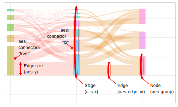

In a Sankey diagram nodes are depicted as stacked bars, possibly with
vertical spacing between them. Use geom_sankeynode() to add nodes to
your Sankey diagram. If you combine the nodes with geom_sankeyedge(),
make sure that both use the same position object.
Usage
GeomSankeynode
geom_sankeynode(
mapping = NULL,
data = NULL,
stat = "sankeynode",
position = "sankey",
na.rm = FALSE,
show.legend = NA,
width = "auto",
align = c("bottom", "top", "center", "justify"),
order = c("ascending", "descending", "as_is"),
h_space = "auto",
v_space = 0,
nudge_x = 0,
nudge_y = 0,
split_nodes = FALSE,
split_tol = 0.001,
direction = c("forward", "backward"),
inherit.aes = TRUE,
...
)Format
An object of class GeomSankeynode (inherits from GeomBar, GeomRect, Geom, ggproto, gg) of length 6.
Arguments
- mapping
Set of aesthetic mappings created by
aes(). If specified andinherit.aes = TRUE(the default), it is combined with the default mapping at the top level of the plot. You must supplymappingif there is no plot mapping.- data
The data to be displayed in this layer. There are three options:
If
NULL, the default, the data is inherited from the plot data as specified in the call toggplot().A
data.frame, or other object, will override the plot data. All objects will be fortified to produce a data frame. Seefortify()for which variables will be created.A
functionwill be called with a single argument, the plot data. The return value must be adata.frame, and will be used as the layer data. Afunctioncan be created from aformula(e.g.~ head(.x, 10)).- stat
The statistical transformation to use on the data for this layer, either as a
ggprotoGeomsubclass or as a string naming the stat stripped of thestat_prefix (e.g."count"rather than"stat_count")- position
Position adjustment, either as a string naming the adjustment (e.g.
"jitter"to useposition_jitter), or the result of a call to a position adjustment function. Use the latter if you need to change the settings of the adjustment.- na.rm
If
FALSE, the default, missing values are removed with a warning. IfTRUE, missing values are silently removed.- show.legend
logical. Should this layer be included in the legends?
NA, the default, includes if any aesthetics are mapped.FALSEnever includes, andTRUEalways includes. It can also be a named logical vector to finely select the aesthetics to display.- width
Width of the node (
numeric). Whensplit_nodesis set toTRUEeach part of the split node will have half this width. Use"auto"to automatically determine a suitable width.- align
A
characterthat indicates how the nodes across the stages are aligned. It can be any of"top","bottom","center"or"justify".- order
A
characterindicating the method to be used for the order of stacking nodes and edges in a plot. Should be one of:ascending(default), sorts nodes and edges from large to small (largest on top);descendingsorts nodes and edges from small to large (smallest on top);as_iswill leave the order of nodes and edges as they are indata.- h_space
Horizontal space between split nodes (
numeric). This argument is ignored whensplit_nodes == FALSE. Use"auto"to automatically position split nodes.- v_space
Vertical space between nodes (
numeric). When set to zero (0), the Sankey diagram becomes an alluvial plot. Use"auto"to automatically determine a suitable vertical space.- nudge_x, nudge_y
Horizontal and vertical adjustment to nudge items by. Can be useful for offsetting labels.
- split_nodes
A
logicalvalue indicating whether the source and destination nodes should be depicted as separate boxes.- split_tol
When the relative node size (resulting source and destination edges) differs more than this fraction, the node will be displayed as two separate bars.
- direction
One of
"forward"(default) or"backward". When set to"backward"the direction of the edges will be inverted. In most cases this parameter won't affect the plot. It can be helpful when you want to decorate the end of an edge (instead of the start; see examples).- inherit.aes
If
FALSE, overrides the default aesthetics, rather than combining with them. This is most useful for helper functions that define both data and aesthetics and shouldn't inherit behaviour from the default plot specification, e.g.borders().- ...
Other arguments passed on to
layer(). These are often aesthetics, used to set an aesthetic to a fixed value, likecolour = "red"orsize = 3. They may also be parameters to the paired geom/stat.
Value
Returns a ggplot2::layer() which can be added to a ggplot2::ggplot()
Details
This ggplot2 layer depicts the size of all connected edges as a bar. The height of
of each bar is determined by the sum of y aesthetic in each group. When the sum of edges
that flow to a bar differ more than split_tol compared to the edges that flow from the
same node, a vertical split is introduced in the node.
Aesthetics
geom_sankeynode() understands the following aesthetics (required aesthetics
are in bold)

x: Works for variables on a discrete scale. Might work for continuous variables but is not guaranteed. This variable is used to distinguish between stages in the Sankey diagram on the x axis.y: A continuous variable representing the width of the edges in a Sankey diagram.group: A discrete variable used for grouping edges to nodes in each stage. Essentially it is an identifier for the nodes.connector: Indicates which side of an edge is reflected by the corresponding record. Should be one of"from"or"to".edge_id: A unique identifier value for each edge. This identifier is used to link specific"from"and"to"records in an edge (flow).fill: see
vignette("ggplot2-specs", "ggplot2")colour: see
vignette("ggplot2-specs", "ggplot2")linetype: see
vignette("ggplot2-specs", "ggplot2")linewidth: see
vignette("ggplot2-specs", "ggplot2")alpha: A variable to control the opacity of an element.